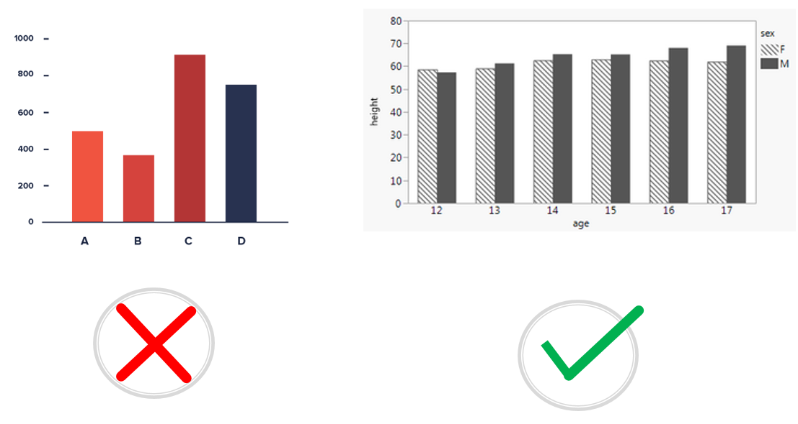
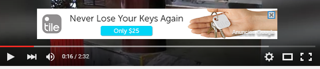

class: center, middle <center><img src="images/ub.png" width="150"></center> # **USABILIDAD Y EXPERIENCIA DE USUARIOS PARA PERSONAS CON DISCAPACIDAD** ## Apuntes de la asignatura Mireia Ribera .blue[ribera@ub.edu] --- class: center, middle, inverse ## https://mireiaub.github.io/ueu2022/ --- class: summary # Índice + [Presentación de la asignatura](#tema0) + [Tema 1: Los usuarios](#tema1) + Visión, Oído y Motrices + Cognitivos y contextuales + [Lenguaje claro](#tema1-lenguajeclaro) + [Lectura fácil](#tema1-lecturafacil) + [Tema 2: Normativa y Legislación](#tema2) + WCAG 2.1 + [Perceptible](#tema2.1-perceptible) + [Operable](#tema2.2-operable) + [Comprensible](#tema2.3-comprensible) + [Robusto](#tema2.4-robusto) + [WCAG 3.0](#tema2.5-wcag3) + [Legislación](#tema2.6-ley) + Tema 3: Documentos digitales + [Documentos ofimáticos](#tema3.1) + [Web](#tema3.2) + [Video](#tema3.3) + Tema 4: [Proceso. Fases, roles y responsabilidades](#tema4) --- name:tema0 class: center, middle, inverse ## Presentación de la asignatura --- ## Objetivos de la asignatura - Conocer las necesidades de los diferentes colectivos de personas con discapacidades y con necesidades especiales - Comprender las discapacidades contextuales - Conocer la normativa y legislación relevante - Aprender a crear recursos digitales que provean una buena experiencia de usuario a persoans con discapacidades o necesidades especiales --- ## La profesora Mireia Ribera - **ribera@ub.edu** - Universidad de Barcelona. Departamento de Matemáticas e Informática + Edificio histórico + Gran Via Corts Catalanes 585 - Contacto previo por email, horas de consulta bajo petición, también consultas online --- ## ¿Qué se espera de los estudiantes matriculados? Los estudiantes deben participar de forma activa en las sesiones presenciales Fuera de las sesiones los estudiantes acabaran de elaborar los informes de las tareas propuestas y comenzadas en el aula. --- ## ¿Cómo se evalua la asignatura? ### Evaluación continua: se basa en dos elementos + Entrega de 4 prácticas con su correspondiente informe, iniciadas en el aula, relativas a los usuarios (10%), documentos ofimáticos (20%), web (20%) y video (20%), a través del campus virtual + Examen final teórico el día 21 de marzo (30%) Para aprobar la asignatura tanto las entregas como el examen deben tener una media de 4 puntos mínima. Si no se aprueba alguna tarea o el examen el 27 de junio [o una fecha a acordar] se puede reevaluar (siempre que la nota sea entre 4 y 5). ### Evaluación única: Un único examen teórico-práctico con todo el contenido de la asignatura el dia 21 de marzo. Si se suspende con una nota entre 4 y 5 se puede revaluar el día 27 de junio [o una fecha a acordar]. --- ## Calendario | Día-Mes | Contenido | Actividad | |-------------------|----------------------------------------------------------|--------------------------------| | 7-feb (lunes) | Usuarios visión, oído, motriz, cognitivos, contextuales | Prueba de Tecnologías de Ayuda | | 9-feb (miércoles) | Lenguaje claro y Lectura fácil | Prueba de Tecnologías de Ayuda | | 14-feb (lunes) | WAI y WCAG | Documentos ofimáticos | | 16-feb (miércoles)| Documentos digitales, PDF y EPUB3 | Documentos ofimáticos | | 21-feb (lunes) | Leyes. Evaluación Web | Web | | 23-feb (miércoles)| Video, resproductores, subtítulos y audiodescripción | Web | | 28-feb (lunes) | Proceso. Fases, roles y responsabilidades | Vídeo | --- ## Calendario entregas | Día-Mes | Entrega | |---------------------|-------------------------| | 18-feb (viernes) | Entrega usuarios(10%) | | 25-feb (viernes) | Entrega documentos (20%)| | 4-mar (viernes) | Entrega web (20%) | | 11-mar (viernes) | Entrega vídeo (20%) | | 21-mar (lunes) | Examen final (30%) | | 27-jun (lunes) [pt.acordar] | Reevaluación | --- <video controls width="70%" style="float:left"> <source src="https://mireiaub.github.io/ueu2022/slides/media/Coyote.mp4"> </video> <p width="30%" style="color:#ffffff">Coyote choca contra un tunel pintado en la pared</p> <p style="clear:both"></p> #Si nuestros productos no son accesibles... ##los usuarios experimentarán barreras que les impedirán usar, jugar o consultar nuestros servicios e información. --- class: center, middle, inverse name:tema1 # Tema 1: **Los usuarios** Según un estudio de Forrester Research con personas de 18 a 65 años: 57% de las personas se benefician de las mejoras en accesibilidad; y de cada 4 personas 1 tiene algún problema de vista; y de cada 5, 1 tiene algún problema de oído. Y mejorar la accesibilidad supone <a href="media/Microsoft-TEI-Accessibility-Study_Edited_FINAL.pdf" >una oportunidad de negocio</a> para las empresas. --- ## Actividad Visionar alguno de los vídeos de sensibilización sobre accsibilidad (en inglés): + <a href="https://www.w3.org/WAI/perspective-videos/">Perspective videos</a> + <a href="https://www.youtube.com/watch?v=vQYzsiVscNg">Niños jugando a la superbowl</a> + <a href="https://www.youtube.com/playlist?list=PLMe9zDtTPTVe62Gb6b9Dkk_IPBUTGQHoD">Tecnologías de asistencia en acción</a> --- ## Visión La discapacidad de visión puede impedir que el usuario perciba los colores, las figuras de texto o imágenes, o que pueda ver al completo una pantalla o un documento. Se denomina *discapacidad* cuando no puede ser corregido con gafas. --- ## Perfiles - **Personas daltónicas** : no perciben bien algunos de los colores (el daltonismo más común es la confusión de rojo y verde). Perciben la diferencia de colores por su luminosidad (rango blanco-negro) - **Personas con baja visión** : hay de dos tipos, de agudeza visual o de campo de visión. En el caso de la agudeza visual pueden tener dificultades con texto pequeño o imágenes muy densas. En el caso de campo de visión pueden no ver parte del contenido. A veces una excesiva luminosidad, así como parpadeos, flashes o movimiento les pueden molestar. Actualmente se distingue entre visión a distancia y visión de cerca. - **Personas ciegas** : No pueden percibir el contenido textual ni las imágenes. Necesitan un lector de pantalla. Fuente: ISO 30071-1:2019. Code of practice for creating accessible ICT products and services --- ## Prevalencia - En el mundo 1.300 millones de personas de personas tienen una discapacidad de visión. La mayoría son mayores de 50 años. 826 de estos tienen problemas con la visión de cerca. Fuente: World Health Organisation, 2017 - [En España](https://www.ine.es/dynt3/inebase/es/index.htm?type=pcaxis&path=/t15/p419/a2017/p04/&file=pcaxis) - [En Cataluña](https://www.idescat.cat/pub/?id=regdis&n=443) Las causas principales son: retinopatía diabética (42%), cataratas (33%) y glaucoma (2%). Puedes ver una [simulación de las discapacidades de visión](https://www.youtube.com/watch?v=KVQvqmze5SU&feature=youtu.be) en este vídeo de Youtube. --- ## Tecnologías de ayuda <p style="text-align:center"><img src="images/TA-Vision.png" width="600" alt="Imágen de Zoomtext, JAWS, VoiceOver, NVDA, línea Braille e impresora Braille" /></p> - **Magnificadores**: Amplían el contenido - **Lectores de pantalla**: Leen por voz el contenido textual - **Línea Braille** con teclado y anotador Braille: para escribir y leer con símbolos Braille - **Impresoras braille** : para imprimir en Braille --- ## Requisitos de contenido - Texto como tal y no como imagen. [Tutorial W3C](https://www.w3.org/WAI/tutorials/images/textual/) - Presentación a medida. [Ejemplo](https://www.oysho.com/) - Gráficos con patrones y legibles con lector de pantalla [Ejemplo](https://www.highcharts.com/samples/highcharts/accessibility/accessible-pie/) - Imágenes con contraste [Colour Contrast Analyser](https://developer.paciellogroup.com/resources/contrastanalyser/) o [versión online de WebAim] (https://webaim.org/resources/contrastchecker/?fcolor=FFFFFF&bcolor=09AAAA) - Idioma indicado en el código [Ejemplo](https://www.youtube.com/watch?v=NP94u7y_KkQ&t=0m10s) - Contexto explícito: número de página, sección, nivel de encabezado - Alternativas textuales para contenido visual [Tutorial WebAIM](https://webaim.org/techniques/alttext/) - Audiodescripción de vídeos [Explicación](https://www.youtube.com/watch?v=i_GrYOruY7w) - Formatos específicos de lectura: EPUB3 con media overlay (https://www.youtube.com/watch?v=6oojghINR8Y) --- ## Actividad - Instalar la extensión para Mozilla Firefox <a href="https://addons.mozilla.org/en-US/firefox/addon/nocoffee/">NoCoffe</a> o la extensión <a href="https://chrome.google.com/webstore/detail/web-disability-simulator/olioanlbgbpmdlgjnnampnnlohigkjla?hl=en">Web Disability Simulation </a> para Chrome. - Instalar la extensión de Chrom <a href="https://chrome.google.com/webstore/detail/read-aloud-a-text-to-spee/">Read Aloud</a> - Visitar 3 webs de vuestro interés y probar los diferentes perfiles de NoCoffee o los perfiles de visión de Web Disability Simulation. - Visitar una web de infografías (por ejemplo la de la <a href="https://www.who.int/mediacentre/infographic/en/">OMS</a>) y leerlas en voz alta. --- ## Oído La discapacidad de audición puede impedir o dificultar a una persona percibir los sonidos o distinguirlos con claridad. Algunos transtornos de audición se pueden solventar con un audífono o con un implante coclear. <p><img src="images/coclear.jpg"alt="parte externa e interna del implante coclear" /></p> --- ## Perfiles - Sordera **prelocutiva** vs **postlocutiva**: La sordera prelocutiva es una discapacidad aguda del oído que tienen lugar antes de aprender a hablar (en edad muy temprana). Las personas sordas prelocutivas pueden haber tenido serios problemas en la adquisición del lenguaje que hayan afectado seriamente el desarrollo del lenguaje. - Personas sordas **oralistas** vs **signistas** : Las personas sordas oralistas leen los labios y se comunican mediante el habla y es el grupo más numeroso. Las personas signistas basan su comunicación en el lenguaje de signos; se autoconsideran una comunidad cultural. El lenguaje de signos no es universal y existe, por ejemplo, un lenguaje de signos catalán, español, británico, americano... [Demostración lectura labios](https://www.youtube.com/watch?v=ksjnWmefBbk?t=56s) - Sordera **leve (21-40dB)** vs **severa (+71dB)** Las personas jovenes con sordera, tienen un nivel de alfabetización alto en los países avanzados gracias a la detección precoz y a la estimulación logopeda. Ahora bien, a veces se ha optado por liberarles del aprendizaje de segundas lenguas como el inglés, hecho que les dificulta acceder a estudios superiores. --- ## Prevalencia - En el mundo 430 millones de personas de personas tienen una discapacidad de oído (aprox 5% de la población). La mayoría son personas adultas (91%). La prevalencia es superior el Pacífico Occidental, America, Europa y Sudasia. Fuente: [World Report on Hearing, World Health Organisation, 2021](https://www.who.int/teams/noncommunicable-diseases/sensory-functions-disability-and-rehabilitation/highlighting-priorities-for-ear-and-hearing-care) - [En España](https://www.ine.es/dynt3/inebase/es/index.htm?type=pcaxis&path=/t15/p419/a2017/p04/&file=pcaxis) - [En Cataluña](https://www.idescat.cat/pub/?id=regdis&n=443) Las causas principales son congénitas o adquiridas. --- ## Tecnologías de ayuda <p style="text-align:center"><img src="images/Audio2.png" width= "55%" alt="funcionamiento del bucle magnético en una sala de conferencias con un amplificador cerca del orador y la sala cubierta por el bucle magnético; trasnmisor FM y collar inductivo" /></p> - **Audífonos**: Cambian la frecuencia del sonido, aumentan su volumen. A menudo incompatibles con el uso de auriculares. - ** Trasnmisores FM**: retransmiten el sonido de un aparato con máxima claridad. - ** Collar inductivo**: permite conectar la TV, teléfono móvil, etc con la prótesis auditiva - ** Bucle magnético **: permite conectar la prótesis auditiva con el sonido de la sala. Muy usado en teatros y espectáculos. - **Ayudas de escritura** suplen posibles deficiencias en la adquisición del lenguaje --- ## Requisitos de contenido - Contenido multimodal: avisos y comunicaciones deben facilitarse también con indicaciones luminosas o imágenes y texto - Subtítulos y lenguaje de signos para vídeo. [ejemplo](https://ableplayer.github.io/ableplayer/demos/video10.html) - Vídeo con pistas de audio principal y de fondo separadas - Lenguaje simple o en casos extremos de lectura fácil.[Tutorial](http://sid.usal.es/libros/discapacidad/26385/8-1/lectura-facil-metodos-de-redaccion-y-evaluacion.aspx) --- ## Actividad - Ir a la web [Hearing Loss Simulation Website] (http://www.starkey.com/hearing-loss-simulator) - Seleccionar la opción Meeting - Moderate y darle a Play. Probar otras opciones --- ## Motor - Este es un colectivo *muy heterogéneo*. Incluye personas con parálisis cerebral, con malformaciones congénitas, con cuadriplegía.[Un caso cercano](https://www.youtube.com/watch?time_continue=8&v=rRz4Ks4S92Y) - En el ámbito digital *las extremidades superiores son las más relevantes*, aunque en juegos y en realidad virtual todo el cuerpo puede ser un elemento de interacción. - La discapacidad *puede afectar el uso del teclado y del ratón, la posición de la pantalla o incluso el habla*. - La disposición física y colocación del ordenador, aparato o teléfono móbil puede impedir un uso adecuado para estos usuarios. El peso de los aparatos tambien puede representar una dificultad. --- ## Perfiles En este colectivo se diferencian los perfiles a partir del tipo de interacción que requieren - **Punteros alternativos o teclado de pantalla** : usuarios con una discapacidad severa que no pueden usar teclados estándares o ratones. - **Reconocimiento del habla** : usuarios con una discapacidad severa que interaccionan con el ordenador mediante órdenes de voz. - **Sólo teclado** : Usuarios con discapacidades leves que no pueden usar un ratón con precisión. Fuente: ISO 30071-1:2019. Code of practice for creating accessible ICT products and services --- ## Prevalencia - Las estadísticas en este grupo no son muy fiables porque se incluyen en el mismo grupo todos los tipos de discapacidad motora, siendo las afectaciones de las piernas las más comunes. - Este colectivo ha aumentado los últimos años debido a los accidentes de tráfico. - [En España](https://www.ine.es/dynt3/inebase/es/index.htm?type=pcaxis&path=/t15/p419/a2017/p04/&file=pcaxis) - [En Cataluña](https://www.idescat.cat/pub/?id=regdis&n=443) --- ## Tecnologías de ayuda <p style="text-align:center"><img src="images/Motor.png" width="60%" alt="Púnteros, joystick, pulsador de barbilla, puntero de boca, pantalla con seguimiento de mirada, interfaz mente-ordenador, panel táctil de comunicación aumentada" /></p> - **Punteros y ratones accesibles**: Adaptados a los restos de mobilidad - **Joysticks**: solventan temblores y falta de precisión - **Sistemas de soplado**: funcionan como ratones - **Pantallas táctiles**: facilitan la introducción de datos - **Sistemas de eye-tracking**: permiten interaccionar con movimientos de los ojos - **Brain computer interfaces**: en experimentación. - **Ayudas de autocompletado**: reducen la cantidad de información requerida --- ## Requisitos de contenido A este grupo no le afecta el contenido sino sobre todo la interacción. - Vínculos separados y con un área de activación grande (efecto "big finger") - Posibilidad de uso del teclado - Reducción de pasos y clics para realizar tareas - Formularios simples y con autocompletado, sin desplegables - Límites de tiempo generosos --- ## Actividad - Descargarse la extensión de Chrome <a href="https://chrome.google.com/webstore/detail/funkify-%E2%80%93-disability-simu/ojcijjdchelkddboickefhnbdpeajdjg">Funkify</a>; o si no funciona descargarse <a href="https://chrome.google.com/webstore/detail/web-disability-simulator/olioanlbgbpmdlgjnnampnnlohigkjla">Web Disability Simulator</a> - Seleccionar el perfil Tremblin Trevor e intentar abrir los horarios de esta asignatura en la web del máster. Hacer lo propio con Mobility - Parkinson. --- ## Cognitivos - En este grupo incluimos a personas que son autónomas en el uso del ordenador y navegando Internet pero que pueden experimentar dificultades asociadas a la *comprensión del lenguaje* y a la *complejidad del contenido*. - También aquí incluimos a personas con *trastornos del espectro autista o Asperger*, que pueden tener dificultades para entender emociones o para interpretar dobles sentidos o el lenguaje corporal. Este grupo ha sido el gran olvidado de las pautas de accesibilidad, aunque recientemente se están tomando acciones para corregir este olvido (ver referencias al final del tema) --- ## Perfiles Aunque hay perfiles muy diversos, como patrones de interacción principal distinguiremos: - *Dislexia, transtornos de aprendizaje y de atención o hiperactividad* : Las personas de este grupo muestran dificultades de concentración y de lectura. Pueden también tener problemas con la escritura. Los textos largos o formularios pueden presentarles barreras importantes.[Ejemplo](http://geon.github.io/programming/2016/03/03/dsxyliea) - *Analfabetismo funcional* : Las personas de este grupo pueden tener dificultades de comprensión de la lengua por niveles bajos de educación, inmigración y aprendizaje de segundas lenguas u otros motivos. Fuente: ISO 30071-1:2019. Code of practice for creating accessible ICT products and services --- ## Prevalencia - Las estadísticas de este grupo no *son fiables* porque no se han recogido sistemáticamente hasta hace muy poco. Algunas veces se habla de "discapacidades ocultas" pues los propios usuarios no quieren reconocer sus características. - En el caso de la dislexia, la *transparencia* del idioma acentúa o no la prevalencia. Por ejemplo en países de habla inglesa se habla de un 15% de personas con dislexia, mientras que en países de habla hispana se habla de un 5% a un 10% de población afectada. --- ## Tecnologías de ayuda <p style="text-align:center"></p> - **Ayudas de lectura**: Que resalten una linea o palabra para facilitar el seguimiento. Que leen en voz alta - **Ayudas de escritura**: para evitar o minimizar errores - **Herramientas de texto a habla**: para tener un refuerzo auditivo en la lectura --- ## Requisitos de contenido - Según el grado: lenguaje simple, lectura fàcil, Comunicación alternativa y aumentativa [AAC](https://aacinstitute.org/introduction-to-aac/) - Mapas conceptuales - Uso intensivo de diferentes tipografías y colores - Evitar complejidad y densidad de información. Evitar textos largos. [Pautas Easy Surfing](http://einfachsurfen.ch/wp-content/uploads/2015/03/Einfachsurfen-Eng-A4_ACC_send.pdf) - Reducir la carga de memoria. Pasos claros y cortos. --- ## Actividad - Con la extensión de Funkify previamente instalada intentar leer una noticia de la prensa con Dyslexia Dani; o con la extensión Web Disability Simulator, hacer lo propio con el perfil de Dyslexia. - Con la extensión de Funkify previamente instalada intentar leer una noticia de la prensa con Hyperactive Henny; o con la extensión Web Disability Simulator, hacer lo propio con el perfil de Concentración. --- # No cumplir las normas de accesibilidad, puede tener consecuencias <a href="https://www.eldiario.es/economia/derechos-sociales-multa-vueling-90-000-euros-mantener-web-accesible-personas-discapacidad_1_7192558.html">Noticia en el Diario.es</a> <a href="https://accesibilidadenlaweb.blogspot.com/2021/02/otro-expendiente-sancionador-contra.html"></a> --- ## Discapacidades contextuales <p style="text-align:center"><img src="images/Contextual1.png" width="70%" alt="La discapacidad no es una condición de salud, es una falta de encaje en la interacción persona-ordenador" /></p> - La tecnología se usa en escenarios diversos, no óptimos en iluminacion, silencio, libertad de movimientos... ello genera situaciones "discapacitantes" --- ## Los <a href="https://www.microsoft.com/design/inclusive/">tres principios del diseño inclusivo</a> 1. **Reconozcamos la exclusión** + aplicamos sesgos por nuestra realidad: género, idioma, conocimientos técnicos, capacidad física, realidad socioeconómica 2. **Aprendamos de la diversidad** + La diversidad nos fuerza a encontrar soluciones creativas y a adaptar nuestros diseños a diferentes usos 3. **Resolver los casos extraordinarios beneficia a todo el mundo** <p style="text-align:center"></p> --- name:tema1-lenguajeclaro class: center, middle, inverse #### El lenguaje claro facilita el acceso a los contenidos, propone modelos de lengua y reduce la sobrecarga cognitiva. Nace en 1990, en USA, para los textos de la administración del estado. ## Lenguaje claro --- ## ¿En qué consiste el lenguaje claro? Tendencia simplificadora y reduccionista + Crea modelos de documentos + Establece y sigue convenciones + Ofrece criterios de redacción + Cuida la morfología y la sintaxis + Vigila el léxico --- ## <a href="https://publications.europa.eu/en/publication-detail/-/publication/c2dab20c-0414-408d-87b5-dd3c6e5dd9a5/language-es">Buenas prácticas de lenguaje claro en la Unión Europea</a> 1. Piense antes de escribir 2. Piense en el lector 3. Dé forma a su documento 4. BYS: !Breve y sencillo! 5. Redacte con sentido 6. Elimine los sustantivos superfluos 7. Sea concreto y no abstracto 8. Mejor activa que pasiva 9. Atención a los falsos amigos, la jerga y las siglas 10. Revise y compruebe --- ## Consejo <strong>1: Breve y sencillo</strong> .column-left[ <h3 style="text-align:center"></h3> Los expertos en ganadería se oponen a la importación de estos animales por varios motivos, que van desde la falta de garantías sanitarias de los países vendedores (quienes no han podido aportar ningún documento, de valor internacional, sobre la cuestión), al descenso de la demanda de estas carnes en nuestro país, y también a la falta de una explicación satisfactoria sobre cómo se realizaría el transporte, el almacenamiento y la conservación de la mercancía.] .column-right[ <h3 style="text-align:center"></h3> Los expertos en ganadería se oponen a la importación de estos animales. Hay varios motivos en contra. Los países vendedores no han aportado garantías sanitarias. No han podido aportar ningún documento de valor internacional. La demanda de estas carnes ha descendido en nuestro país. Tampoco se ha explicado de forma satisfactoria cómo se realizaría el transporte, el almacenamiento y la conservación de la mercancía. ] --- ## Consejo <strong>2: Limitar los intercalados</strong> .column-left[ <h3 style="text-align:center"></h3> Un médico de un gran hospital londinense ha provocado una fuerte polémica al afirmar que está preparado para utilizar un programa de ordenador diseñado para decidir qué pacientes deben ser atendidos prioritariamente en función de sus posibilidades de supervivencia. ] .column-right[ <h3 style="text-align:center"></h3> Un médico londinense crea polémica al presentar un programa informático que decide qué pacientes deben ser atendidos prioritariamente según sus posibilidades de supervivencia. ] --- ## Consejo <strong>3: Orden</strong> .column-left[ <h3 style="text-align:center"></h3> Corrió la chica, después, hacia la carretera y, con mucha fuerza, gritó ] .column-right[ <h3 style="text-align:center"></h3> Después la chica corrió hacia la carretera y gritó con mucha fuerza ] --- ## Consejo <strong>4: Poner la información relevante al principio</strong> .column-left[ <h3 style="text-align:center"></h3> A primeras horas de la mañana de ayer, jueves, apareció ahorcado en un corral junto a su domicilio, en Pedroso, <em>un hombre de 62 años, casado y con cuatro hijos</em>. ] .column-right[ <h3 style="text-align:center"></h3> <em>Un hombre de 62 años, casado y con cuatro hijos</em>, apareció ahorcado en un corral junto a su domicilio, en Pedroso, a primeras horas de la mañana de ayer, jueves. ] --- ## Consejo <strong>5: Proporción alta de verbos</strong> .column-left[ <h3 style="text-align:center"></h3> En el caso de una excesiva preocupación de los estudiantes por la gramática puede ser útil el conocimiento de las técnicas de generación de ideas y la reflexión sobre los defectos cometidos durante la escritura. <p class="highlight">35 palabras, 1 verbo, 11 sustantivos</p> ] .column-right[ <h3 style="text-align:center"></h3> Si los estudiantes se preocupan excesivamente por la gramática puede ser útil que conozcan las técnicas para generar ideas y que reflexionen sobre los defectos que cometen mientras escriben. <p class="highlight">28 palabras, 7 verbos, 5 sustantivos</p> ] --- ## Consejo <strong>6: Evitar las negaciones</strong> .column-left[ <h3 style="text-align:center"></h3> Ignoraba que los cajeros automáticos no pudieran servir billetes de 100 euros. ] .column-right[ <h3 style="text-align:center"></h3> Creía que los cajeros automáticos podían servir billetes de 100 euros. ] --- ## Consejo <strong>7: Mejor en voz activa</strong> .column-left[ <h3 style="text-align:center"></h3> El taxista Héctor Jorge González <em>fue muerto</em> de un balazo en San Justo. Se trata del segundo asesinato… ] .column-right[ <h3 style="text-align:center"></h3> El taxista Héctor Jorge González <em>murió</em> de un balazo en San Justo. Se trata del segundo asesinato… ] --- ## Consejo <strong>8: Evitar los gerundios</strong> .column-left[ <h3 style="text-align:center"></h3> Me ha pedido permiso para citar en la conferencia los resultados de mis investigaciones, <em>asegurándome</em> que sólo los comentaría oralmente y que no pasaría ninguna fotocopia, y <em>comprometiéndose</em> a mencionar mi autoría exclusiva. ] .column-right[ <h3 style="text-align:center"></h3> Me ha pedido permiso para citar en la conferencia los resultados de mis investigaciones. <em>Me ha asegurado</em> que sólo los comentaría oralmente y que no pasaría ninguna fotocopia, y <em>se ha comprometido</em> a mencionar mi autoría exclusiva. ] --- ## Consejo <strong>9: Dejar actuar los actores</strong> .column-left[ <h3 style="text-align:center"></h3> Antes de preparar la primera taza, <em>se llena</em> el depósito de agua, <em>se añade </em> el café molido a la cápsula y <em>se deja calentar</em> la máquina hasta que se apague la luz piloto. <em>Se han difundido</em> varios chismorreos sobre los príncipes <em>a través de la prensa italiana</em> en los últimos meses ] .column-right[ <h3 style="text-align:center"></h3> Antes de preparar la primera taza, <em>llene </em> el depósito de agua, <em>añada</em> el café molido a la cápsula, y <em>deje calentar</em> la máquina hasta que se apague la luz piloto. <em>La prensa italiana ha difundido</em> varios chismorreos sobre los príncipes en los últimos meses. ] --- ## Actividad + En grupos de 2 + Aplica los consejos de lenguaje claro a un texto <a href="https://www.abc.es/espana/comunidad-valenciana/abci-ineca-apuesta-innovacion-y-formacion-para-garantizar-sostenibilidad-economia-201907121924_noticia.html">Noticia INECA ABC Comunidad Valenciana</a> + Coméntalo con otros compañeros --- ## Para saber más + Daniel Cassany La cocina de la escritura Barcelona: Anagrama, 1996 + Unión Europea <a href="ttps://publications.europa.eu/en/publication-detail/-/publication/c2dab20c-0414-408d-87b5-dd3c6e5dd9a5/language-es">Como Escribir con claridad</a> + <a href="https://plainlanguagenetwork.org/">Plain language network </a> --- name:tema1-lecturafacil class: center, middle, inverse #### La lectura fácil reduce la abstracción; amplia algunos contenidos, si es necesario; cuida el aspecto formal de los textos; complementa el texto con dibujos y pictogramas. Nace en 1990, en Suecia. ## Lectura fácil --- ## 1. Criterios de comprensibilidad Los criterios de comprensibilidad se refieren a la capacidad del vocabulario y de la estructura sintáctica de las frases para simplificar el texto y hacerlo comprensible. --- ### 1.1 Vocabulario + Usar un lenguaje sencillo y directo. + Usar palabras propias del lenguaje hablado cotidiano. + Evitar palabras difíciles, pero usar un lenguaje adulto y digno. + Usar palabras con significado preciso y evitar palabras genéricas, vacías de significado. --- ### 1.1 Vocabulario (continuación) + Usar las mismas palabras de forma sistemática. No cambiar de sinónimo para referirse al mismo concepto. Entre dos sinónimos, escoger el más frecuente. + Usar verbos para describir acciones. Evitar los verbos nominalizados. + Evitar los conceptos abstractos, el lenguaje figurado, las metáforas y las palabras polisémicas. Si son imprescindibles y de uso poco común, poner ejemplos concretos o hacer comparaciones que faciliten su comprensión. + Evitar, si es posible, los adverbios acabados en “-mente”. --- ### 1.2 Gramática + Escribir frases cortas (10 palabras de media) con una única idea principal en cada oración + Las palabras de una sola frase se colocan en una línea + Las frases más largas se fragmentan, pero se respetan las unidades sintagmáticas. + Evitar las frases subordinadas --- ### 1.2 Gramática (continuación) + Mantener el orden convencional de la frase (sujeto + verbo + predicado). + El sujeto real concuerda con el sujeto gramatical. + Usar siempre que sea posible la voz activa en lugar de la pasiva + Usar las formas afirmativas en vez de negativas. Reservar la construcción negativa para frases con valor realmente negativo. Evitar las dobles negaciones. --- ## 2. Criterios de legibilidad Los criterios de legibilidad se refieren a la capacidad de la estructura del texto y del formato para facilitar su lectura. --- ### 2.1 Estructura narrativa + A menudo es difícil escribir en lectura fácil. Escribir para la comprensión fácil no significa escribir textos telegráficos. Tener una buena historia para explicar y conseguir un texto fluido es esencial para mantener el interés del lector + Construir una historia concreta y lógica con una sola línea argumental. + Escribir frases cortas con una sola idea principal en cada oración + Desarrollar la acción de forma directa y simple, siguiendo una secuencia lógica. --- ### 2.1 Estructura narrativa (continuación) + Describir los hechos en orden cronológico, es decir, sin saltos en el tiempo. + Evitar elipsis y sobreentendidos: no se puede presuponer conocimiento del contexto (lugar, países, fechas…) o de los referentes culturales necesarios para comprender una historia. Presentar los antecedentes, exponer el contexto. + Evitar las introducciones excesivamente largas + Evitar la implicación de muchos personajes en cada acción. --- ### 2.2 Formato + Evitar las líneas excesivamente largas. La longitud de línea debe tener entre 55-60 caracteres contando los espacios. + Dividir el texto en párrafos y en capítulos relativamente cortos, para permitir pausas frecuentes. + No justificar el texto, alinearlo a la izquierda. --- ### 2.2 Formato (continuación) + Evitar dejar partículas al final de línea como artículos, pronombres, preposiciones y conjunciones + Intentar colocar los diferentes complementos de la oración en líneas separadas + La separación en líneas debe facilitar el ritmo natural de la lectura. --- ### Ejemplo .column-left[ <h3 style="text-align:center"></h3> Nadie será sometido a torturas ni a penas o tratos crueles, inhumanos o degradantes. Todos son iguales ante la ley y tienen, sin distinción, derecho a igual protección de la ley. Todos tienen derecho a igual protección contra toda discriminación que infrinja esta Declaración y contra toda provocación a tal discriminación.] .column-right[ <h3 style="text-align:center"></h3> Nadie puede maltratar o torturar a otra persona. Las leyes deben proteger y ayudar de la misma forma a todas las personas.] --- ## Actividad + En grupos de 2 + Aplica los consejos de lectura fácil a un texto <a href=="https://www.abc.es/sociedad/abci-hombre-fingio-tener-mas-2000-tumores-para-estafar-mas-250000-euros-acepta-anos-carcel-202102081151_noticia.html">Noticia ABC </a> + Coméntalo con otros compañeros --- ## Para saber más + <a href="https://www.inclusion-europe.eu/easy-to-read-standards-guidelines/">European standards for making information easy to read and to understand</a> + <a href="http://www.lecturafacil.net/">Associació Lectura fácil</a> + <a href="https://sites.google.com/view/lecturafaciljoves">Ejemplos de lectura fácil en ESO (con ejercicios)</a> --- name:tema2 class: center, middle, inverse ## Accesibilidad Web. Pautas WCAG 2.1 --- ## Componentes esenciales de la accesibilidad web <p style="text-align:center"><img src="images/componentesEsenciales.png" width="70%" alt="La accesibilidad web afecta a las herramientas de autoría y de evaluación (ATAG), al contenido (WCAG) y a los agentes de usuario (UAAG), tales como navegadores, reproductores y aydas técnicas" /></p> --- ## Pautas de Accesibilidad para el Contenido Web 2.1 + Algunos conceptos relevantes + Proceso + Esencial / Simple decoración + Alternativa: cumple el mismo propósito + Compatible con la accesibilidad --- ## ¿Cómo funcionan? + Énfasis en la validación. Niveles de conformidad + Texto y teclado, <span class="highlight">otros mecanismos de entrada (WCAG 2.1)</span> + Principios – Pautas – Criterios de conformidad + Documentos de apoyo: + Comprender las WCAG 2.1 + Cómo cumplir con las WCAG 2.1 + Técnicas para las WCAG 2.1 --- ## Los cuatro principios 1. Perceptible 2. Operable 3. Comprensible 4. Robusto En inglés, <span lang="en">*POUR* (Perceptible, Operable, Understandable and Robust)</span> --- name:tema2.1-perceptible class: center, middle, inverse ### El contenido ha de poder ser percibido por todos los usuarios (de forma visual, sonora, táctil, etc.) ## Principio 1: Perceptible --- ## 1.1 Alternativas textuales + 1.1 Proporcionar alternativas textuales para todo contenido no textual de modo que se pueda convertir a otros formatos que las personas necesiten, tales como textos ampliados, braille, voz, símbolos o en un lenguaje más simple. + 1.1.1 Contenido no textual Nivel A + Técnicas G94, G95, G82, G68, G100, G143 --- ## Ejemplos alternativas textuales (1.1) en HTML <p style="text-align:center"><img src="images/altEjemplosBienMal.png" width="70%" alt="Incorrecto: Una captura de los botones de cerrar, minimizar o maximizar tiene el texto alternativo 'fig_02_018.jpg'; Incorrecto: para entrar en un web se pide leer un texto confuso (captcha); Incorrecto: otro captcha consistente en resolver 5+9 tiene el texto alternativo: 'captcha', Correcto: otro captcha se basa en la pregunta: 'escoja la palabra de la lista que se corresponde con 27-6' y las posibles respuestas son 'Bogotá, Motocicleta, Ventiuno, Desván, Plutón'" /></p> <p><a href="http://www.ite.educacion.es/formacion/materiales/6/cd/m2/los_botones_de_la_ventana.html">Texto alt incorrecto</a>, <a href="https://www.diba.cat/formulari-de-contacte">Captcha incorrecto</a>, <a href="https://w6.seg-social.es/ProsaInternetAnonimo/OnlineAccess?ARQ.SPM.ACTION=LOGIN&ARQ.SPM.APPTYPE=SERVICE&ARQ.IDAPP=XV106001">Captcha correcto</a></p> --- ## Como introducir la alternativa textual (1.1) en MS Word Debe rellenarse el campo de descripción en el cuadro de diálogo de formato de imágen: <p style="text-align:center"></p> --- ## Como introducir la alternativa textual (1.1) en Adobe Acrobat Se puede acceder al cuadro de diálogo del texto alternativo con la herramienta de Orden de Lectura, o a través de las etiquetas. <p style="text-align:center"><img src="images/altAdobeAcrobat.png" width="70%" alt="Herramienta de orden de lectura, y Etiquetas en Adobe Acrobat" /></p> --- ## Medios tempodependientes (audiovisuales) + 1.2 Proporcionar alternativas para los medios tempodependientes. + 1.2.1 Sólo audio y solo vídeo(grabado) Nivel A + 1.2.2 Subtítulos (grabado) Nivel A + 1.2.3 Audiodescripción o Medio Alternativo (grabado) Nivel A + 1.2.4 Subtítulos (en directo) Nivel AA + 1.2.5 Audiodescripción (en directo) Nivel AA + Técnicas G158, G159, G166, G93, G87, G69, G78, G173, G8, G9 --- ## Bibliografía para contenidos audiovisuales(1.2) <p style="text-align:center"><a href="https://administracionelectronica.gob.es/pae_Home/pae_Estrategias/pae_Accesibilidad/pae_documentacion/pae_eInclusion_Guias_Practicas.html#.XGVO2Fz0mUk"><img src="images/GuiaAccesibilidadContenidosMultimedia.png" width="70%" alt="Portada de la guía de accesibilidad en Contenidos Multimedia" /></a></p> --- ## 1.3 Adaptable + 1.3 Crear contenido que pueda presentarse de diferentes formas (por ejemplo, con una disposición más simple) sin perder información o estructura. + 1.3.1 Información y relaciones Nivel A + 1.3.2 Secuencia significativa Nivel A + 1.3.3 Características sensoriales Nivel A + <span class="highlight">1.3.4 Orientación</span> Nivel AA (WCAG 2.1) + <span class="highlight">1.3.5 Identifica el propósito de la entrada</span> Nivel AA (WCAG 2.1) --- ## Información y relaciones (1.3.1) y Secuencia significativa (1.3.2). Ejemplos en MS Word y Adobe Acrobat <p style="text-align:center"></p> --- ## Características sensoriales (1.3.3) . Ejemplos en web, MS Word y Adobe Acrobat <p style="text-align:center"><img src="images/caracteristicasSensorialesWebWordAcrobat.png" width="70%" alt="UI Toolkit para personalización de páginas web; Menú de estilos de word; PDF abierto en Adobe Reader con colores personalizados" /></p> --- ## Características sensoriales (1.3.3) . Ejemplos de tablas <p style="text-align:center"><img src="images/tablas.png" width="70%" alt="Tabla diseñada sin estructura; Tabla visualizada con VIP readaer; Opción de diseño web en visualización de MS Word" /></p> --- ## Características sensoriales (1.3.3) . Ejemplos de colores <p style="text-align:center"></p> --- ## <span class="highlight">Orientación (1.3.4)</span> <p style="text-align:center"><a href="https://www.onlinepianist.com/"><img src="images/rotacionMal.png" width="70%" alt="la app de onlinepianist fuerza a girar el dispositivo" /></a></p> --- ## <span class="highlight">Orientación (1.3.4). Ejemplo HTML</span> <p style="text-align:center"><img src="images/rotacionBien.png" width="70%" alt="un formulario se adapta a la posición del móbil" /></p> --- ## 1.4 Distinguible + 1.4 Facilitar a los usuarios ver y oír el contenido, incluyendo la separación entre el primer plano y el fondo. + 1.4.1 Uso del color Nivel A + 1.4.2 Control del audio Nivel A + 1.4.3 Contraste (mínimo) Nivel AA + 1.4.4 Cambio de tamaño del texto Nivel AA + 1.4.5 Imágenes de texto Nivel AA + <span class="highlight">1.4.10 Reorganizar</span> Nivel AA (WCAG 2.1) + <span class="highlight"> 1.4.11 Contraste en el contenido no textual </span> Nivel AA (WCAG 2.1) + <span class="highlight">1.4.12 Espaciado de texto </span> Nivel AA (WCAG 2.1) + <span class="highlight">1.4.13 Contenido con Hover o Foco </span> AA (WCAG 2.1) --- ## Cambio de tamaño de texto (1.4.4). Ejemplo HTML <p style="text-align:center"></p> <p><a href="https://www.ub.edu/ubtv/es">Ejemplo UB</a> <a href="https://www.uvic.cat/">Ejemplo Universitat de Vic</a></p> --- ## Imágenes de texto (1.4.5) <p style="text-align:center"><img src="images/imagenTextoBienMal.png" width="70%" alt="el logo de Yoigo puede ser una imagen. El folleto del Máster Universitario de Investigación en Arte y Diseño, no" /></p> <p><a href="https://www.yoigo.com/">Logo Yoigo</a>, <a href="http://bloc.eina.cat/master-oficial-eees-master-universitari-de-recerca-en-art-i-disseny/">Ejemplo Màster</p> --- ## Control de audio (1.4.2) <p style="text-align:center"></p> <p><a href="https://www.youtube.com/watch?v=vilRUEgkHGI">YouTube</p> --- ## <span class="highlight"> 1.4.11 Contraste de color en el contenido no textual </span> <p style="text-align:center"></p> --- ## Herramientas para contraste de color en texto (1.4.1) y en elementos no textuales (1.4.11) </span> <p style="text-align:center"><img src="images/herramientasContraste.png" width="70%" alt="Colour Contrast Analyser, contrast ratio, Branwood y Color safe" /></p> <p><a href="https://developer.paciellogroup.com/resources/contrastanalyser/">Colour Contrast Analyser</a>, <a href="https://contrast-ratio.com/">Contrast Ratio</a>, <a href="http://www.brandwood.com/a11y/">Branwood</a>, <a href="http://colorsafe.co/">Color safe</a> </p> --- ## <span class="highlight">Espaciado de texto (1.4.12)</span> <p style="text-align:center"></p> --- ## <span class="highlight">1.4.13 Contenido con Hover o Foco </span> <p style="text-align:center"><img src="images/OcultarBien.png" width="70%" alt="El contenido que aparece en el Hover, se puede eliminar o mover el puntero por él para evitar oclusiones" /></p> --- ## Bibliografía para 1.4, distinguible <p style="text-align:center"><a href="https://alistapart.com"><img src="images/AListApart.png" width="70%" alt="Vínculo a la revista A List Apart" /></a></p> --- name:tema2.2-operable class: center, middle, inverse #### El contenido ha de ser manejable usando los dispositivos de entrada de los usuarios (ratón, teclado, etc.). ## Principio 2: Operable --- ## 2.1 Accessible por teclado + 2.1 Proporcionar acceso a toda la funcionalidad mediante el teclado. + 2.1.1 Teclado Nivel A + 2.1.2 Sin trampas para el foco del teclado Nivel A + <span class="highlight">2.1.4 Atajos de teclado</span> Nivel A (WCAG 2.1) --- ## Acceso teclado (2.1), ejemplo HTML <p style="text-align:center"></p> --- ## Tiempo suficiente (2.2) + 2.2 Proporcionar a los usuarios el tiempo suficiente para leer y usar el contenido. + 2.2.1 Tiempo ajustable Nivel A + 2.2.2 Poner en pausa, detener, ocultar Nivel A --- ## Poner en pausa, detener, ocultar (2.2.2), ejemplo HTML <p style="text-align:center"><img src="images/autoScrollBienMal.png" width="70%" alt="Se muestran dos carrousels. El primero de la UB no tiene controles, el segundo del ayuntamiento sí" /></p> <p><a href="https://www.elcorteingles.es/#">Carrousel de El Corte Inglés</a>, <a href="https://ajuntament.barcelona.cat/ca/">Carrousel ayuntamiento de Barcelona</a></p> --- ## 2.3 Convulsiones + 2.3 No diseñar contenido de un modo que se sepa podría provocar ataques, espasmos o convulsiones. + 2.3.1 Umbral de tres destellos o menos. Nivel A --- ## Convulsiones (2.3) Ejemplos y herramienta <p style="text-align:center"><img src="images/epilepsiaMalHerramientas.png" width="70%" alt="El logo de UK de los juegos olímpicos podía causar ataques epilépticos, una imagen con efecto óptico también. La herramienta PEAT ayuda a medirlo" /></p> <p><a href="https://trace.umd.edu/peat">Herramienta PEAT (mirar limitaciones al final página web)</a></p> --- ## 2.4 Navegable + 2.4 Proporcionar medios para ayudar a los usuarios a navegar, encontrar contenido y determinar dónde se encuentran. + 2.4.1 Evitar bloques Nivel A + 2.4.2 Titulado de páginas Nivel A + 2.4.3 Orden del foco Nivel A + 2.4.4 Propósito de los enlaces (en contexto) Nivel A + 2.4.5 Múltiples vías Nivel AA + 2.4.6 Encabezados y etiquetas Nivel AA + 2.4.7 Foco visible Nivel AA + 2.4.11 <span class="highlight">Apariencia foco </span> Nivel AA (WCAG 2.2, aún working draft) + 2.4.13 <span class="highlight">Navegación por saltos de página </span> Nivel A (WCAG 2.2, aún working draft) --- ## Evitar bloques (2.4.1), y Titulado de páginas (2.4.2). Ejemplos HTML <p style="text-align:center"><img src="images/navegacionBienMal.png" width="70%" alt="En el web de WebAIM se ofrece la opción de ir al contenido principal. Si buscamos en Google 'untitled page' recupereamos millones de páginas" /></p> --- ## 2.4.4 Propósito de los enlaces. Ejemplos HTML <p style="text-align:center"><img src="images/propositoEnlacesMal.png" width="70%" alt="Los vínculos 'Read More' o 'Leer más' no son informativos" /></p> <p><a href="https://crystalbridges.org/blog/">Blog con enlaces "read more"</a></p> --- ## 2.4.5 Múltiples vías y Encabezados y etiquetas. Ejemplos HTML <p style="text-align:center"><img src="images/estructuraBienMal.png" width="70%" alt="En el web de la Generalitat se puede llegar a una página por el buscador o por menús. La estructura del diario ABC no sigue un orden lógico" /></p> --- ## <span class="highlight">2.5 Modalidades de entrada</span> + 2.5 Facilitar al usuario diversos mecanismos para interaccionar con el contenido más allá del teclado (WCAG 2.1). + <span class="highlight">2.5.1 Gestos de puntero</span> Nivel A (WCAG 2.1) Es posible actuar con un solo puntero + <span class="highlight">2.5.2 Cancelación de puntero</span> Nivel A (WCAG 2.1) No se produce acción por movimiento abajo. Se puede cancelar la acción. + <span class="highlight">2.5.3 Etiqueta en el nombre</span> Nivel A (WCAG 2.1) La descripción y la etiqueta son coherentes + <span class="highlight">2.5.4 Actuación por movimiento</span> Nivel A (WCAG 2.1) Si se activa una acción por movimiento también se puede activar por otros inputs. + 2.5.7 <span class="highlight">Movimiento de arrastre </span> Nivel A (WCAG 2.2, aún working draft) + 2.5.8 <span class="highlight">Tamaño botones o vínculos </span> Nivel AA (WCAG 2.2, aún working draft) --- name:tema2.3-comprensible class: center, middle, inverse #### Los usuarios han de ser capaces de entender el contenido, su organización y su manejo ## Principio 3: Comprensible --- ## 3.1 Legible + 3.1 Hacer que los contenidos textuales resulten legibles y comprensibles. + 3.1.1 Idioma de la página Nivel A + 3.1.2 Idioma de las partes Nivel AA --- ## Idioma de la página y de las partes (3.1.1 y 3.1.2) Ejemplo en PDF <p style="text-align:center"><img src="images/idiomaAdobeAcrobat.png" width="70%" alt="Caja de diálogo de idioma del documento, y de una etiqueta específica en Adobe Acrobat" /></p> --- ## 3.2 Predecible + 3.2 Hacer que las páginas web aparezcan y operen de manera predecible. + 3.2.1 Al recibir el foco Nivel A + 3.2.2 Al recibir entradas Nivel A + 3.2.3 Navegación coherente Nivel AA + 3.2.4 Identificación coherente Nivel AA + 3.2.6 <span class="highlight">Ayuda conherente </span> Nivel A (WCAG 2.2, aún working draft) + 3.2.7 <span class="highlight">Controles visibles </span> Nivel AA (WCAG 2.2, aún working draft) --- ## 3.3 Entrada de datos asistida + 3.3 Ayudar a los usuarios a evitar y corregir los errores. + 3.3.1 Identificación de errores Nivel A + 3.3.2 Etiquetas o instrucciones Nivel A + 3.3.3 Sugerencias ante errores Nivel AA + 3.3.4 Prevención de errores (legales, financieros, datos) Nivel AA + 3.3.7 <span class="highlight">Autenticación accesible (test cognitivo) </span> Nivel A (WCAG 2.2, aún working draft) + 3.3.8 <span class="highlight">Entrada redundante </span> Nivel A (WCAG 2.2, aún working draft) --- ## Sugerencias y prevención de errores (3.3.3 y 3.3.4) <p style="text-align:center"><img src="images/erroresBienMal.png" width="70%" alt="Búsqueda de Google: showing results for accessibility, search instead for acesibility. Calendario de búsqueda de vuelos en el Corte Inglés, pero sin acceso por teclado" /></p> <p><a href="https://www.viajeselcorteingles.es/">Viajes El Corte Inglés</a></p> --- name:tema2.4-robusto class: center, middle, inverse #### El contenido ha de estar correctamente estructurado para garantizar un adecuado funcionamiento con las aplicaciones de usuario. ## Principio 4: Robusto --- ## 4.1 Compatible + 4.1 Maximizar la compatibilidad con las aplicaciones de usuario actuales y futuras, incluyendo las ayudas técnicas. + 4.1.1 Procesamiento Nivel A + 4.1.2 Nombre, función, valor Nivel A + <span class="highlight">4.1.3 Mensaje de estado</span> Nivel AA (WCAG 2.1) <p style="text-align:center"><a href="http://whatsock.com/tsg/Coding%20Arena/Progress%20Bars/Progress%20Bar%20(Dynamic%20Fixed%20Container%20with%20Trigger)/demo.htm"><img src="images/barraProgresoBien.png" width="70%" alt="Barra de progreso accesible" /></a></p> --- name:tema2.5-wcag3 ## La nueva visión de la accesibilidad: WCAG 3.0 A partir de las dificultades identificadas con las pautas WCAG (<a href="https://docs.google.com/presentation/d/1POs7orJ4ALB0bq5_vyo4v8RxDcr-5ctwD1noVgpXuJc/edit#slide=id.gc6f73a04f_0_0">Informe de investigación del grupo Silver</a>) las nuevas <a href="https://www.w3.org/TR/wcag-3.0/">WCAG 3.0</a>, aún en gestación, proponen un cambio de paradigma. Algunos puntos importantes: + Estandard paralelo. Se podrá escoger entre WCAG 2.2 o WCAG 3. El cumplimiento global se evaluará como Bronce (nivel AA actual), Plata u Oro. + Tests con ayudas técnicas + "criterio de éxito" pasa a ser "resultados", y se evaluan de 0 (hay un error crítico) a 4 + Más allá de la web (W pasará a ser W3C) + Incluye el contenido generado por los usuarios (por ejemplo en redes sociales) + Contiene categorías funcionales (tipos de discapacidades) + Sufrirá cambios con más frecuencia --- name:tema2.6-ley ## Leyes sobre accesibilidad Desde 2003 se suceden diversas leyes generales o sectoriales para regular la accesibilidad del contenido web especialmente en el sector público pero también en empresas grandes o de interés general. Actualmente la legislación más relevante es la <em>European Accessibility Act, Directiva 2019/882 sobre los requisitos de accesibilidad de los productos y servicios</em>. También la norma <em>EN 301 549: "Requisitos de accesibilidad adecuados para la contratación pública de productos y servicios TIC en Europa"</em> de 2018 --- ## European Accessibility Act: ámbito y calendario <strong>Ámbito</strong>: Productos: ordenadores, móbiles, lectores de libros electrónicos, cajeros, ...; Servicios: sitios web, aplicaciones móviles, documentos, servicios telefonicos, banca, libros electrónicos... excepto para microempresas: menos de 10 personas; menos de 2 millones de euros anuales de facturación. <strong>Calendario<strong>: Deberá ser traspuesta a legislación nacional en 2022. Aplicará a partir de 28 de junio de 2025 para nuevos productos; a partir de 28 de junio de 2030 para productos anteriores. --- ## European Accessibility Act: contenido Referencia la norma EN 301-549 Pero cubre muchos más aspectos Aplica criterios de rendimiento funcional: uso sin visión, con visión limitada, sin percepción del color, sin audición, con audición limitada, sin capacidad vocal, con manipulación o esfuerzos limitados, con alcance limitado, con fotosensibilidad, con conocimiento limitado. --- ## UNE-EN 301 549: Requisitos de accesibilidad contratación TIC <strong>Calendario</strong>: Aplica desde noviembre de 2021. Establece los <a href="https://olgacarreras.blogspot.com/2014/02/en-301-549-primera-norma-europea-de.html#detalle">requisitos funcionales en la contratación pública de productos y servicios TIC</a>. Define más de 200 requisitos y recomendaciones. Para cada requisito explica en qué condiciones se aplica, las acciones que se deben realizar para verificar su cumplimiento, y en qu casos se puede suponer cumplido o no. --- ## Documentos de referencia .column-left[ <p><a href="https://olgacarreras.blogspot.com/2018/11/libro-accesibilidad-web-wcag-21-de.html"><img src="images/WCAG21DeFormaSencilla.png" width="40%" alt="Portada libro Accesibilidad web. WCAG 2.1 de forma sencilla" /></a></p> <p><a href="https://observatoriodelaaccesibilidad.es/wp-content/uploads/2020/06/Accesibilidad-web.pdf"></a></p>] .column-right[ <p><a href="https://w3c.github.io/coga/user-research/">Cognitive Accessibility User Research</a>Draft 21 September 2021</p> <p><a href="https://w3c.github.io/low-vision-a11y-tf/requirements.html">Accessibility Requirements for People with Low Vision</a>Editor's draft 4 November 2021</p> <p><a href="https://w3c.github.io/Mobile-A11y-TF-Note/">Mobile Accessibility: How WCAG 2.0 and Other W3C/WAI Guidelines Apply to Mobile</a>Editor's draft 11 December 2018</p> <p><a href="https://www.youtube.com/channel/UCdW_0pPNiiPLaLM90_20org/featured">Videos explicativos sobre la EN 301 549</p> ] --- class: center, middle, inverse name:tema3.1 # Tema 3.1: **Accesibilidad documentos digitales (PDF + EPUB)** --- ## PDF vs EPUB: aspectos en común + Documento largo y expresivo en un único fichero + Permite la gestión de derechos digitales + Estándar abierto + En sus versiones PDF/UA y en todas las de EPUB es un documento estructurado --- ## PDF vs EPUB: aspectos diferenciadores .column-left[ ### PDF + Formato binario + Especificación compleja + No sigue estándares abiertos + Audio solo con recursos sistema operativo + No muy flexible + Origen empresa Adobe + Adoptado servicios de impresión ] .column-right[ ### EPUB + Formato textual + Especificación similar a HTML + Sigue estándares abiertos: MathML, SMIL, HTML5 + Permite audio incorporado + Originado colaborativamente + Adoptado editoriales ] --- ## PDF vs EPUB3: pros y cons .column-left[ ### PDF ####Pros + Muy fiable en la presentación final + Muy adoptado (no la versión PDF/UA) ####Cons + Dependencia de Adobe + Lectores no aprovechan características accesibles ] .column-right[ ### EPUB ####Pros + Crecientemente adoptado + Basado en DAISY y HTML5 + Con herramientas de código libre para crear y usar ####Cons + Poco fiable en la presentación final + Pocas herramientas de autor para la versión EPUB3 ] --- ## El formato PDF. Origen y evolución <p style="text-align:center"></p> + Julio 2008: PDF como norma ISO 32000-1:2008 + Octubre 2012: PDF/UA aprobado como estándar internacional ISO --- ## Variantes del formato PDF + PDF/A – Archivo. Norma ISO (2005) + PDF/X – Impresión. + PDF/E – Ingeniería. Incluye dibujos 3D y CAD. + PDF/UA – Accesibilidad Universal --- ## Los 5 niveles de accesibilidad de los documentos PDF + PDF imagen – no accesible. + PDF texto. + PDF texto, con orden. + PDF etiquetado automáticamente. + PDF etiquetado manualmente – accesible. Fuente: adaptación a partir de Alaistair Campbell --- ## Chuleta: Cómo crear un PDF a partir de un documento MS Word + Instalar Adobe Acrobat + Crear el Word de la manera más accesible posible + Usar comprobación accesibilidad + Incrustar fuentes + Convertir Word en PDF desde el menú de Adobe + Abrir el PDF en Adobe Acrobat + Hacer comprobación completa de accesibilidad (herramientas Accesibilidad) + En Archivo-Propiedades indicar que la vista inicial sea título del documento y si es necesario, cambiar el idioma + En la vista de miniaturas de página, seleccionarlas todas y establecer el orden como “estructura de la página” + Abrir las páginas con la herramienta “Orden de Lectura” y reordenar para que coincidan el orden semántico y el visual + Si hay tablas, revisar encabezados + Se recomienda revisar primero todos los problemas, y antes de tocar el PDF volver a MS Word y arreglarlo desde allí. --- ## EPUB origen y evolución + Antecedentes: Mobipocket, Microsoft LIT, iBook Open eBook Publication Structure + DAISY (DTBook) 1986-2011 + Específico para visión + EPUB 2.0 Octubre 2007, por IDPF + Internamente DTBook o XHTML + EPUB 3.0 October 2011, por ISO + Internamente, variante de HTML5 + [EPUB 3.3](https://www.w3.org/TR/epub-33/) 2022, por W3C (en proceso) + ISO/IEC 23761:2021 Digital publishing - EPUB accessibility - Conformance and discoverability requirements for EPUB publications --- ## ¿Dónde encontrar EPUB3? + Plataformas de distribución: Amazon, Apple iTunes Store, Google, B&N,... + Bibliotecas Universitarias (CRAI) + Colecciones de libros electrónicos de distribución libre: Project Gutenberg, Free eBooks.net,... --- ## Aplicaciones sencillas para crear y leer EPUB3 + Aplicación para la conversión de documentos accesibles a EPUB3: [Word to EPUB](https://daisy.org/activities/software/wordtoepub/) + Aplicación para la lectura de libros electrónicos en formato EPUB3: [Calibre](https://calibre-ebook.com/download_windows) --- class: center, middle, inverse name:tema3.2 # Tema 3.2: Documentos digitales: Web --- class: center, middle, inverse name:tema3.3 # Tema 3.3: **Documentos digitales: Video** --- ## ¿Cuándo usar contenido video? .column-left[ + El video cómo formato: + Transmite emociones, es más digestible + Más personal y cercano + Para un público con poco dominio de la lengua + Video tutorial: + Explicar con ejemplos en directo es más sencillo + Video como única alternativas: + Diferente geografía, diferente época + Simulaciones o experimentos peligrosos + El vídeo es valioso si: + Imagen y sonido se complementan + La imagen y el sonido enriquecen el mensaje ] .column-right[ ] --- ## Démosle otra vuelta + Significa una barrera para: + Usuarios sordos labiales, + Usuarios ciegos, + Usuarios con baja visión, + Usuarios sin infraestructura de conexión. + Usuarios con discapacidades motrices (botones y control) + Puede ser más ameno para: + Usuarios con trastornos de lectoescritura, + Usuarios con discapacidades cognitivas, + Pero atención al déficit de atención o a ritmos impuestos + Usuarios sordos signistas (vídeos de signos). + Hacer un vídeo accesible <em>tiene un coste elevado</em> --- ## Soluciones <center></center> --- ## Soluciones (II) + Baja conectividad + Ofrecer diversos vídeos de pequeño tamaño + Dependencias de plataforma + Ofrecer diversos formatos + Ofrecer la opción de descargar + Carga cognitiva + Planificar y revisar los tempos + Coherencia + Guión estructurado --- ## Soluciones (III) + Audición + Subtítulos : abiertos o cerrados + Signista (en pantalla aparte, de gran tamaño) + Visión + Audiodescripción o guión explicativo + Déficit de atención y discapacidades motrices + Evitar la ejecución automática + Botón de stop + Reproductor accesible, como por ejemplo [AblePlayer](https://ableplayer.github.io/ableplayer/) --- ## Posibles escenarios de autoría + Amateur + Si el vídeo lo ha hecho otra persona + Añadir subtítulos (en la [propia plataforma](https://support.google.com/youtube/answer/6054623?hl=en) o [externos](https://amara.org/es/) ) + Si el vídeo lo hacemos nosotros + Añadir subtítulos + Profesional + Clarificar criterios de accesibilidad + Comprobarlos --- ## Legislación y normativas (I) + 21st Century Communications and Video Accessibility Act (CVAA) + Real Decreto 1112/2018, 7 de septiembre + UNE 139803:2012 + WCAG 2.1 + Reproductor accesible + Subtítulos + Audiodescripción --- ## Legislación y normativas (II) + TV + Ley 7/2010, 31 de Marzo, general de la comunicación audiovisual + Establece unas cuotas de subtítulos y Audiodescripción en las televisiones públicas + Subtitulado + UNE 153010:2010 Subtitulado para personas sordas y personas con discapacidad auditiva + Audiodescripción + UNE 153020:2005 Audiodescripción para personas con discapacidad visual --- ## Subtitulado (I) UNE 153010:2012 + Colores adecuados y con suficiente contraste + Solo 2 líneas. 37 caracteres como máximo. Cada personaje en una línea .column-left[ ] .column-right[ ] --- ## Subtitulado (II) UNE 153010:2012 + Centrado de los subtítulos + 12 caracteres por segundo + Efectos sonoros: en () Mayúscula inicial, posición superior derecha + Información contextual: en () MAYÚSCULAS, posición inferior centrada .column-left[ ] .column-right[ ] --- ## Subtitulado (III) UNE 153010:2012 + Sincronizado de subtítulos + La división se adapta al contenido + Se mantienen las abreviaciones + Números del 0 al 10 en texto, superiores en números + Evitar muletillas + Usar pronombres y formas cortas de ubicaciones y personalidades --- ## Audiodescripción + Pista de audio adicional para describir personajes y acciones claves + Saca provecho de los silencios en el diálogo + Debe seguir el estilo del vídeo + Lenguaje llano + Incluye créditos --- name:tema4 class: center, middle, inverse ## Tema 4: Proceso. Fases, roles y responsabilidades --- ## Accesibilidad por perfiles y en los procesos + Garantizar la accesibilidad solo mediante obligación legal y con una normativa muy técnica **es dificil** + Diferentes roles y responsabilidades dentro de las empresas y las organizaciones requieren diferentes aproximaciones a la accesibilidad + Ver guías por perfiles en campus virtual + Vincular la accesibilidad con las políticas, métricas, incentivos e incluso penalizaciones es básico para una introducción real --- ## Accesibilidad en herramientas de autoría + Garantizar la accesibilidad solo mediante las WCAG **es dificil** + Las herramientas de autor deben permitir, facilitar, priorizar, informar y validar el contenido accesible. El documento de referencia son las ATAG. + La creación de contenido automático, las plantillas, los editores deben incorporar la accesibilidad --- ## Tendencias en CMS y herramientas de autor de documentos ofimáticos + En CMS a menudo las opciones por defecto no son accesibles + Los CMS "listos para usar" no permiten configurar la accesibilidad + Se requiere una instalación de base y tener en cuenta: + plantillas + plugins + editores HTML + La mayoría de CMS incluyen sección "accessibility" informando de sus posibilidades + Se han creado CMS y LMS específicos para la accesibilidad. Ej. Nomensa y ATutor. Moodle + Blackboard está haciendo pasos en esta dirección + Cada vez más herramientas de autoría de documentos ofimáticos incluyen herramientas de validación de accesibilidad (MS Office Word, Adobe Acrobat). Son herramientas complementarias, nunca completas. --- <center><img src="images/allfolks.gif" width="100%" alt="That's all folks"></center>